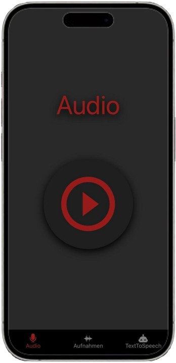
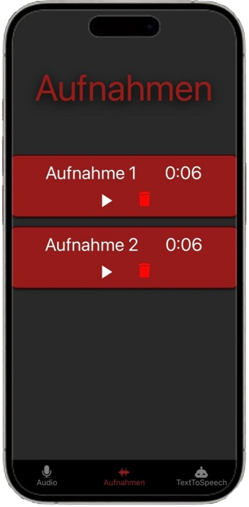
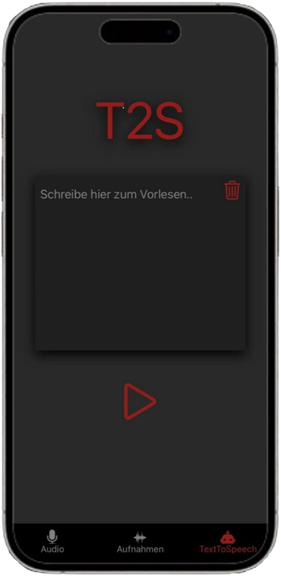

yAPP
Evan Lüber
Vorschau
  
Beschreibung
Machen Sie Ihre eigene
Tonaufnahme
Hören
Sie sich Ihre Tonaufnahme an
Ihre Tonaufnahme gefällt Ihnen nicht?
Löschen
Sie diese einfach
Keine Lust selbst zu lesen?
TextToSpeech
liest für Sie